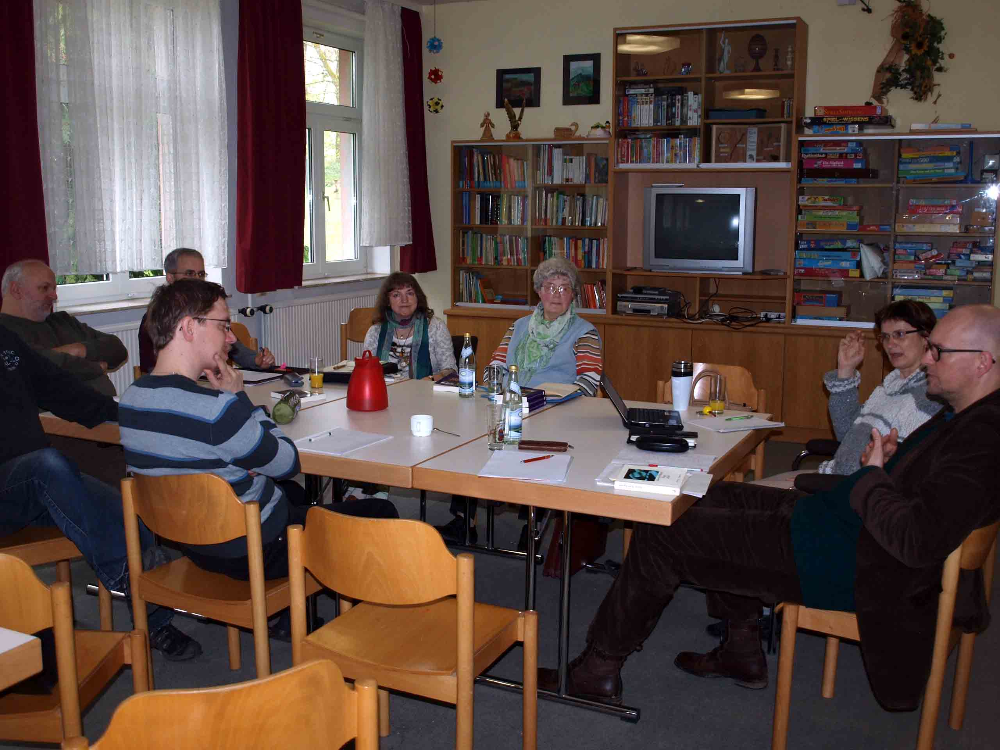
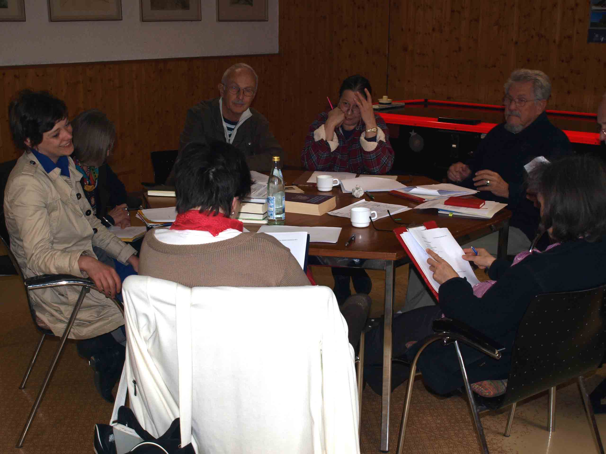
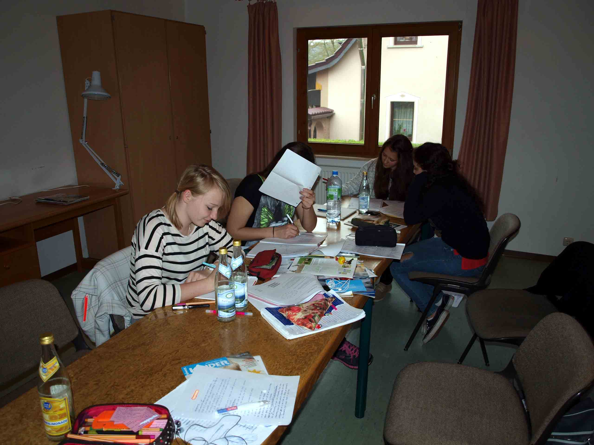
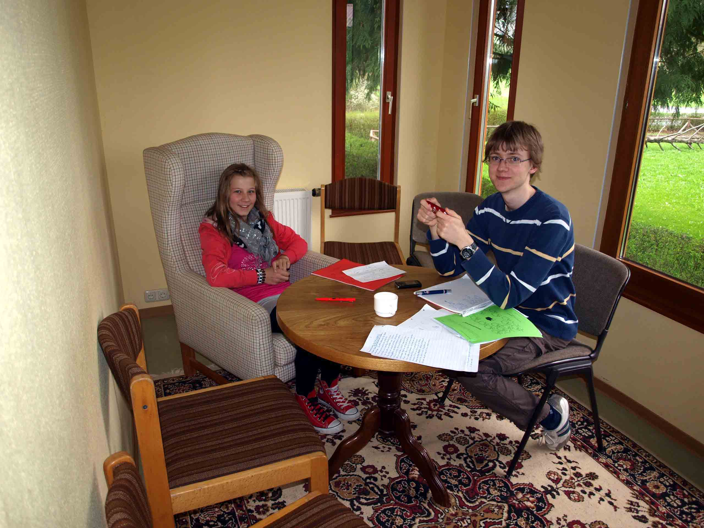
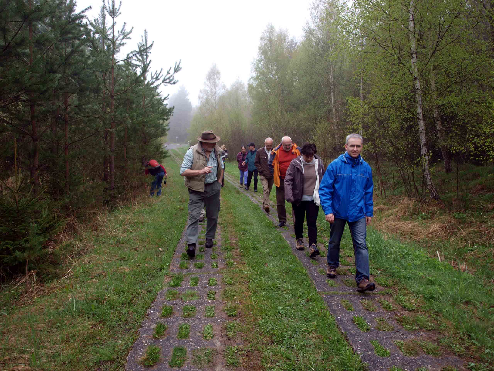
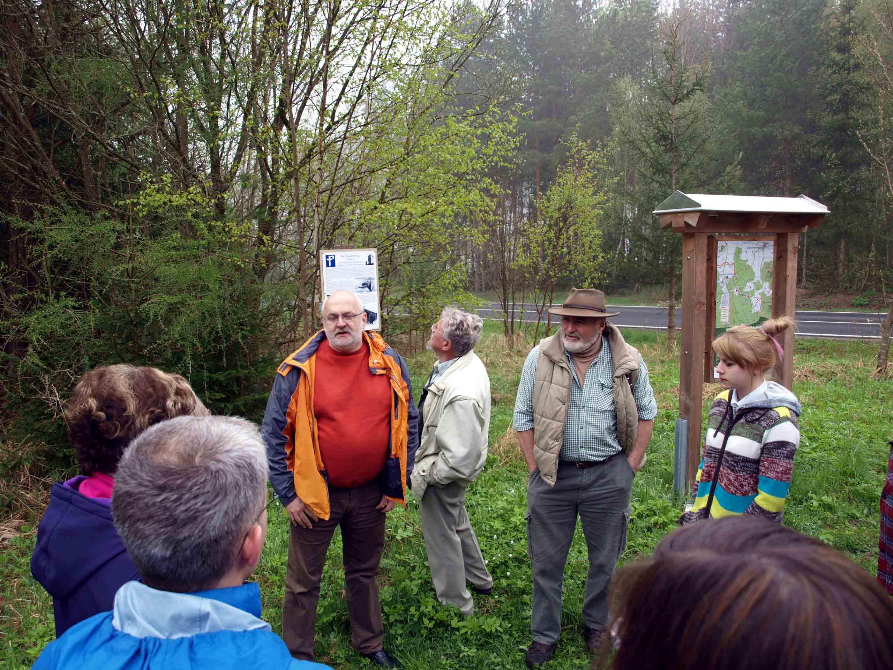

Bei der 24. Südthüringer Literaturwerkstatt gab es einiges Neues. Das Wichtigste: die Werkstatt tagte in einem neuen Domizil, der Jugendbildungsstätte „Thüringische Rhön" in Schafhausen. 23 Autorinnen und Autoren waren diesmal dabei, ziemlich gleichmäßig auf die Arbeitsgruppen Prosa, Lyrik und Jugend verteilt. Sie widmeten sich dem Thema „Grenzerfahrung(en)". Die Jugend unter Lektorin Ulrike Blechschmidt konnte in einem eigenen Haus Ideen sammeln, Texte verfassen und ein interessantes Programm zusammenstellen. In der Prosagruppe von Matthias Göritz und in der Lyrikgruppe unter der Leitung von Nancy Hünger – beide zum wiederholten Mal dabei! – rauchten die Köpfe. Durch Text-Feinarbeit und Hinweise konnte die Qualität verbessert werden. Frisch entstandene Texte waren schon am Samstag zur Soiree im Baumbachhaus zu hören, diesmal perfekt musikalisch umrahmt von Meininger Musikschülern unter Leitung von Wen-Chen Theile. Am Sonntagvormittag bot Wanderführer Roland Amrhein einen Ausflug an die einstige innerdeutsche Grenze an.






